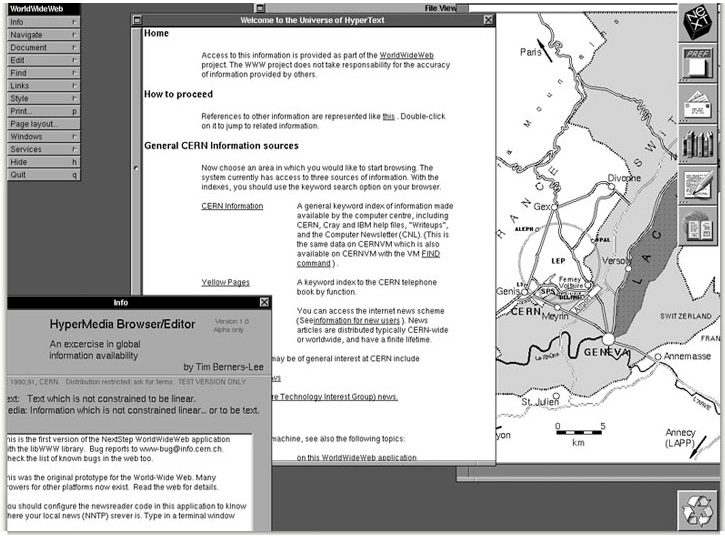
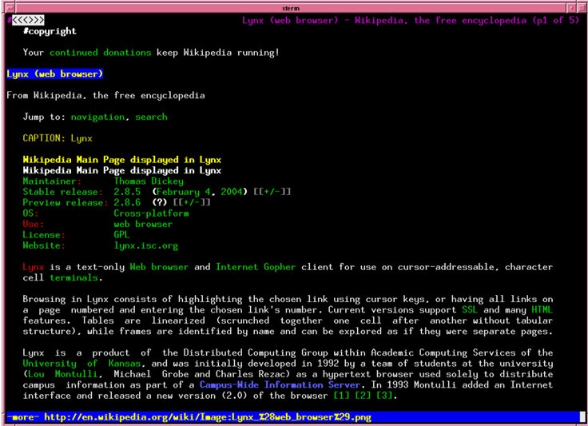
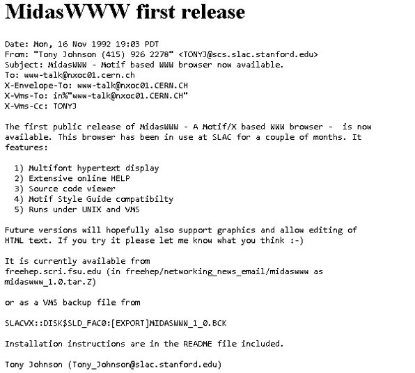
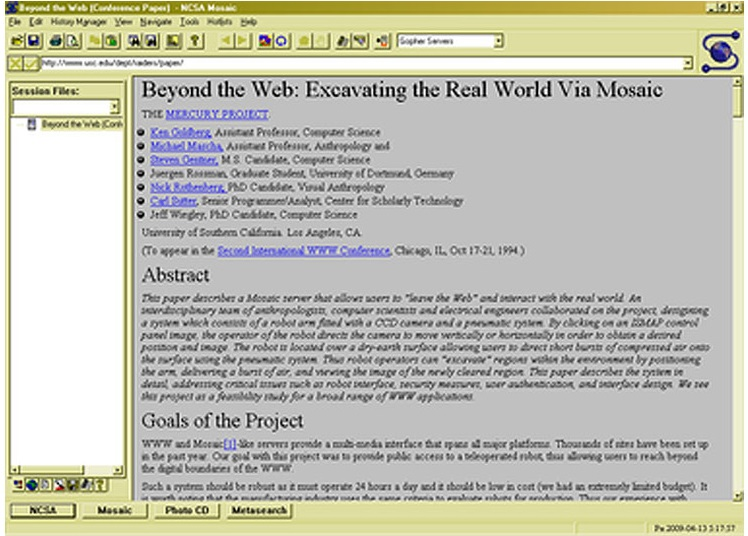
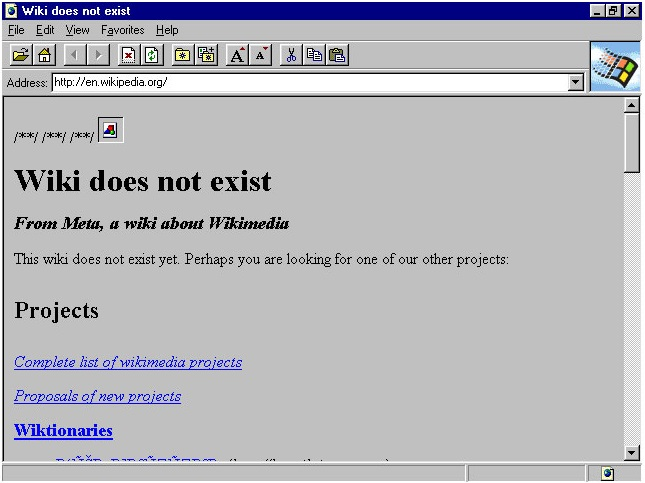
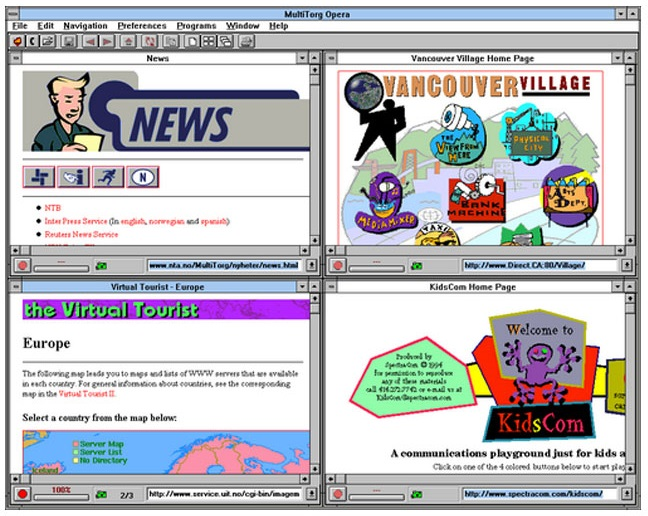
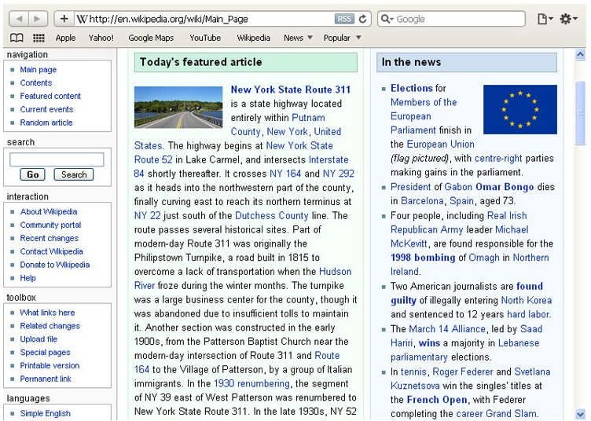
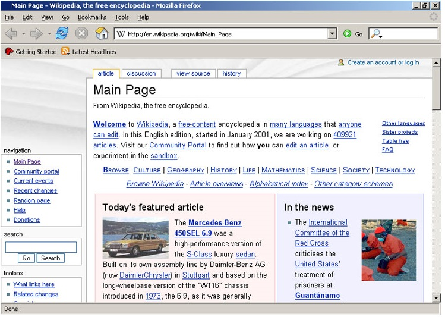
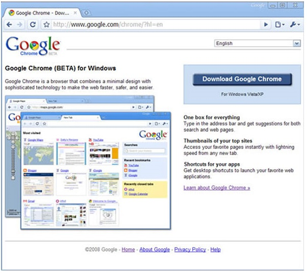
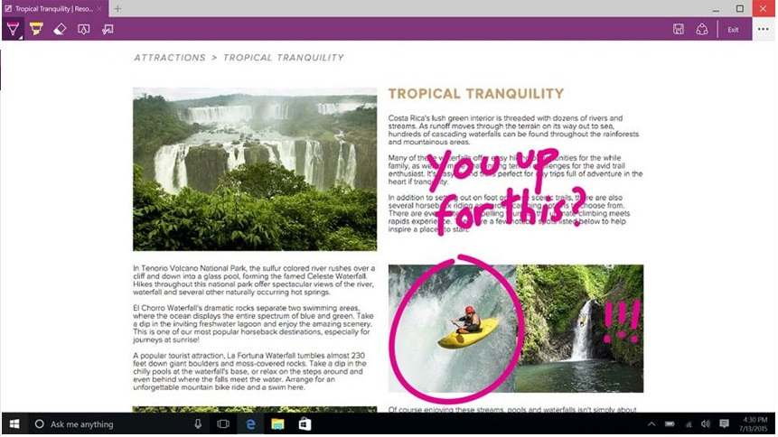

1990. Den allra första webbläsaren WorldWideWeb. Bytte senare namn till Nexus för att undvika
förvirring med the World Wide Web.

1992. Lynx utvecklades på Standford.

1992. Textbaserad webbläsare utan stöd för bilder, video eller liknande.

1993. Mosaic har inte funnits på många år, men som den första webbläsaren att kunna visa bilder
ökade den kraftigt användadet.

1995. Internet Explorer släpps som Microsofts första egna webbläsare.

1996. Norska Opera publiceras offentligt på marknaden.

2003. Apples första webbläsare Safari.

2004. Firefox lanseras. Gratis och med öppen källkod.

2008. Vår populäraste webbläsare idag Google Chrome når marknaden.

2015. Tidigare under arbetsnamnet Project Spartan så släpps Microsoft Edge.